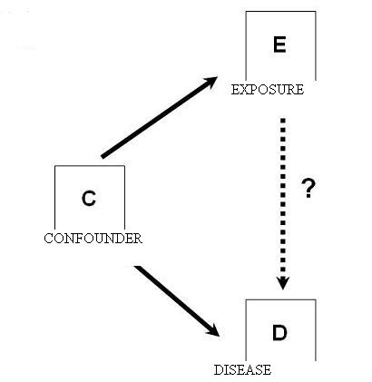

Causal Diagrams or Directed Acyclic Graphs (DAGs)
Lead Author(s): Jeff Martin, MD
Definition of Causal Diagrams
The stick and box figure below is known as a causal diagram. More formally, they are used in other fields such as artificial intelligence and the social sciences where they are called directed acyclic graphs (DAGs). They are now beginning to be used in epidemiology and clinical research and are at the frontier of epidemiologic theory. They are useful in helping one conceptualize one’s biological/psychologic/sociologic system under study. In particular, they are useful for identifying pitfalls fo adjusting and not adjusing for certain variables.
Diagram
